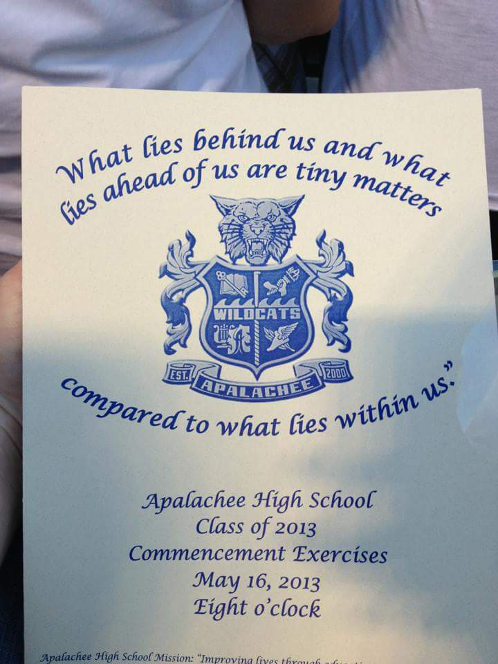
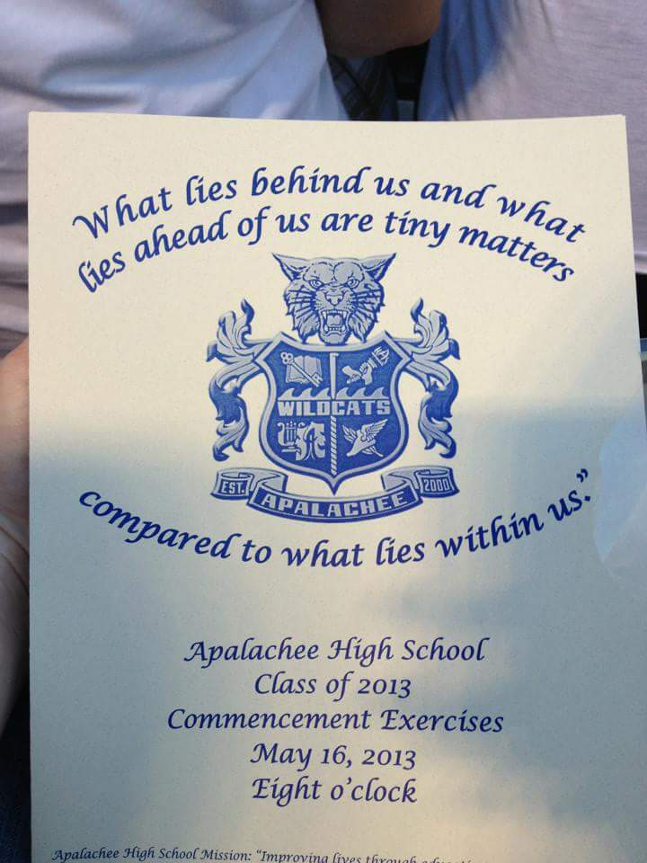

Winder, Georgia
Apalachee Highschool
 

May 2013, yes I know that was 5 years ago #SuperSenior
I grew up not far from Athens. So close that my highschool prom was here, across from Snelling.Every year they continue to still have prom on campus at UGA. I even crashed my sister's prom back in 2015 when I was a sophmore.
Winder is approximately 35 minutes away and is not a very large town. If any of you have ever driven to Atlanta from Athens, you drive straight through it. The town is so small we only have 2 high schools in the whole county.However, not the smallest from what we have heard about our fellow classmates.
I found an article that shows that my graduating class was just under 400 people, the highest the school had ever had at the time.

Keeping it in the family, my sister graduate from AHS in 2015 and my cousin will be graduating from AHS this year.
Previous Page
 Next Page
Next Page
Previous Page
Next Page